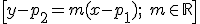
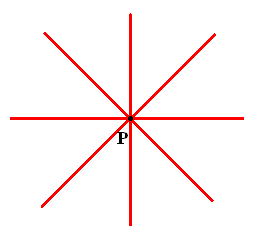
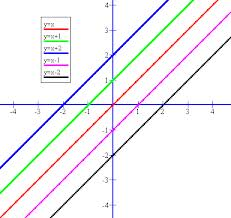

Un haz de rectas secantes, es el conjunto de infinitas rectas que pasa por un punto P(p1,p2):


Ejemplo: y – 3 = m (x – 2), m Є R, es el haz de rectas que pasa por el punto (2,3).
Un haz de rectas paralelas, es el conjunto de infinitas rectas paralelas a una dada r : Ax + By + C = 0:

Ejemplo: 3x + 2y + k = 0, k Є R, es el haz de rectas paralelas a 3x + 2y – 15 = 0
Ejercicios
1.- Encuentra la ecuación de la recta que pasa por el punto de intersección de las rectas r: 3x + y - 1 = 0, s: x - y + 5 = 0 paralela a x + y = 0.
2.- Encuentra la ecuación de la recta que pasa por los puntos (3,3) y (-1,-1), usando el haz de rectas secantes de uno de ellos.
Soluciones: a) x + y -3 = 0; b) y - 3 = 1·(x - 3)